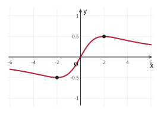
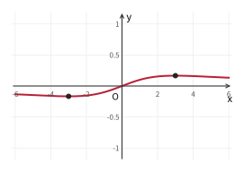
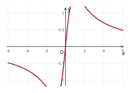

別冊練習問題 8 の解答 分数関数のグラフ（極値と漸近線）
(1) 関数 \(f(x)=\dfrac{2 x}{x^{2} + 4}\) の極値と漸近線を求め、グラフの概形をかけ。
導関数
\[f'(x)=\dfrac{2 \left(- x^{2} + 4\right)}{x^{4} + 8 x^{2} + 16}\]
\(f'(x)=0\) より \(x=-2,\ 2\)。
増減と極値
\[\text{極大値 }\dfrac{1}{2},\qquad \text{極小値 }- \dfrac{1}{2}\]

漸近線
\[\lim_{x\to\pm\infty}f(x)=0\]
漸近線は \(y=0\)。
【答案】
\[\text{極大値 }\dfrac{1}{2},\ \text{極小値 }- \dfrac{1}{2},\ \text{漸近線 }y=0\]答
(2) 関数 \(f(x)=\dfrac{x}{x^{2} + 9}\) の極値と漸近線を求め、グラフの概形をかけ。
導関数
\[f'(x)=\dfrac{- x^{2} + 9}{x^{4} + 18 x^{2} + 81}\]
\(f'(x)=0\) より \(x=-3,\ 3\)。
増減と極値
\[\text{極大値 }\dfrac{1}{6},\qquad \text{極小値 }- \dfrac{1}{6}\]

漸近線
\[\lim_{x\to\pm\infty}f(x)=0\]
漸近線は \(y=0\)。
【答案】
\[\text{極大値 }\dfrac{1}{6},\ \text{極小値 }- \dfrac{1}{6},\ \text{漸近線 }y=0\]答
(3) 関数 \(f(x)=\dfrac{3 x}{x^{2} + 1}\) の極値と漸近線を求め、グラフの概形をかけ。
導関数
\[f'(x)=\dfrac{3 \left(- x^{2} + 1\right)}{x^{4} + 2 x^{2} + 1}\]
\(f'(x)=0\) より \(x=-1,\ 1\)。
増減と極値
\[\text{極大値 }\dfrac{3}{2},\qquad \text{極小値 }- \dfrac{3}{2}\]

漸近線
\[\lim_{x\to\pm\infty}f(x)=0\]
漸近線は \(y=0\)。
【答案】
\[\text{極大値 }\dfrac{3}{2},\ \text{極小値 }- \dfrac{3}{2},\ \text{漸近線 }y=0\]答